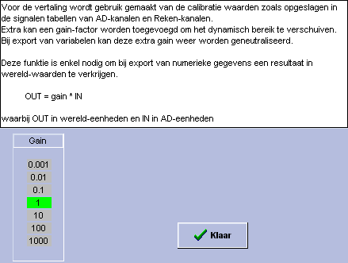

MIDAC
Startpagina
|
Inhoudsopgave
REKENFUNCTIES
Overzicht
MIDAC, rekenfunctie 16
DEZE REKENFUNCTIE
Beschrijving
AD naar Wereldwaarde conversie
Instellingen Venster

© Instrumentele Dienst. Bijgewerkt op 8-12-1999.